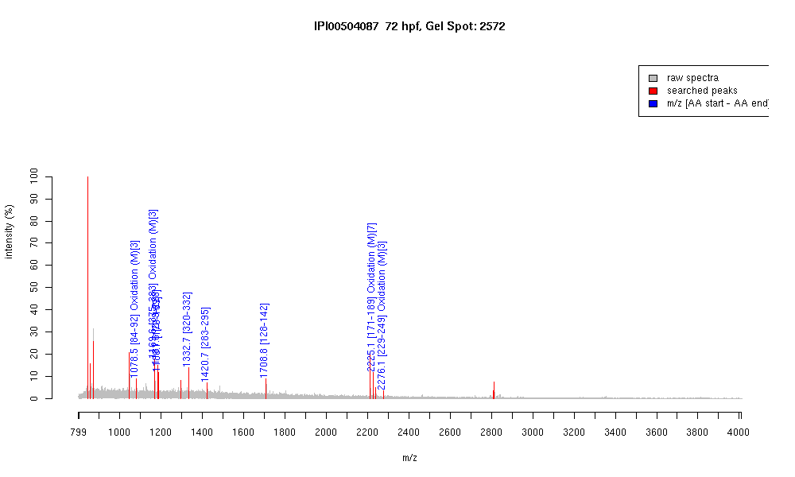

IPI00504087 :: Gel Spot=2572
| Name | Type I cytokeratin |
|---|
| MW | 46655.7 |
|---|
| PI | 5.13 |
|---|
| Mascot Protein Score | 93 |
|---|
| Masses (matched / unmatched) | 9 / 13 |
|---|

| Peptide | MZ (calc) | MZ (observed) | Error (DA) | Error (PPM) | Start | Stop | Modifications |
|---|
| ATMQNLNDR | 1078.4946 | 1078.5089 | 0.0143 | 13 | 84 | 92 | Oxidation (M)[3] |
| LEMEIAEYR | 1169.5507 | 1169.5725 | 0.0218 | 19 | 375 | 383 | Oxidation (M)[3] |
| NHEEELLAAR | 1181.5909 | 1181.6116 | 0.0207 | 18 | 219 | 228 | |
| QSVEADIVGLR | 1186.6426 | 1186.6532 | 0.0106 | 9 | 179 | 189 | |
| ASLEGTLADTQAR | 1332.6754 | 1332.6841 | 0.0087 | 7 | 320 | 332 | |
| EVAVSTETLQTSR | 1420.7278 | 1420.7434 | 0.0156 | 11 | 283 | 295 | |
| DYSAYYATISDLQAK | 1708.8064 | 1708.8153 | 0.0089 | 5 | 128 | 142 | |
| YENELSMRQSVEADIVGLR | 2225.0867 | 2225.1145 | 0.0278 | 12 | 171 | 189 | Oxidation (M)[7] |
| TQMSGQVNVEVDAAPQEDLTK | 2276.071 | 2276.0693 | -0.0017 | -1 | 229 | 249 | Oxidation (M)[3] |